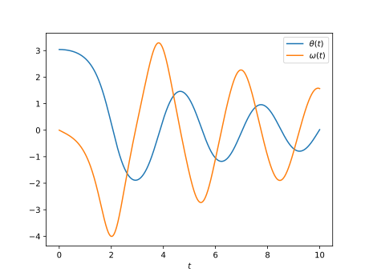
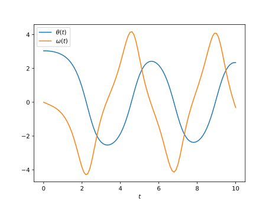

Numerical methods challenge: Day 18
During October (2017) I will write a program per day for some well-known numerical methods in both Python and Julia. It is intended to be an exercise then don't expect the code to be good enough for real use. Also, I should mention that I have almost no experience with Julia, so it probably won't be idiomatic Julia but more Python-like Julia.
The Runke-Kutta
Today we have the Runge-Kutta method. This is the most popular Runge-Kutta out there, and it used a weighted average of four (smaller) increments.
The increments are done with the formula
where
Following are the codes.
Python
from __future__ import division, print_function import numpy as np import matplotlib.pyplot as plt def RK4(dydt, y0, t, args=()): ndof = len(y0) ntimes = len(t) y = np.zeros((ndof, ntimes)) y[:, 0] = y0 for cont in range(1, ntimes): h = t[cont] - t[cont - 1] k1 = dydt(y[:, cont - 1], t[cont], *args) k2 = dydt(y[:, cont - 1] + 0.5*h*k1, t[cont] + 0.5*h, *args) k3 = dydt(y[:, cont - 1] + 0.5*h*k2, t[cont] + 0.5*h, *args) k4 = dydt(y[:, cont - 1] + h*k3, t[cont] + h, *args) y[:, cont] = y[:, cont - 1] + h/6*(k1 + 2*k2 + 2*k3 + k4) return y def pend(y, t, b, c): theta, omega = y dydt = [omega, -b*omega - c*np.sin(theta)] return np.array(dydt) b = 0.25 c = 5.0 y0 = [np.pi - 0.1, 0.0] t = np.linspace(0, 10, 101) y = RK4(pend, y0, t, args=(b, c)) plt.plot(t, y[0, :]) plt.plot(t, y[1, :]) plt.xlabel(r"$t$") plt.legend([r"$\theta(t)$", r"$\omega(t)$"]) plt.show()
Julia
using PyPlot function euler(dydt, y0, t; args=()) ndof = length(y0) ntimes = length(t) y = zeros(ndof, ntimes) y[:, 1] = y0 for cont = 2:ntimes h = t[cont] - t[cont - 1] y[:, cont] = y[:, cont - 1] + h*dydt(y[:, cont - 1], t[cont], args...) end return y end function pend(y, t, b, c) theta, omega = y dydt = [omega, -b*omega - c*sin(theta)] return dydt end b = 0.25 c = 5.0 y0 = [pi - 0.1, 0.0] t = linspace(0, 10, 1001) y = euler(pend, y0, t, args=(b, c)) plot(t, y[1, :]) plot(t, y[2, :]) xlabel(L"$t$") legend([L"$\theta(t)$", L"$\omega(t)$"]) show()
In both cases the result is the following plot
Comparison Euler/Runge-Kutta
If we compare Euler and Runge-Kutta methods for the previous example using 101 timesteps, 10 times less than before, we obtain the results below. The upper one is the one obtained with Euler method. We can see that the result is not the same. We can (loosely) say that we need less steps in Runge-Kutta method than in Euler method.
Comparison Python/Julia
Regarding number of lines we have: 36 in Python and 37 in Julia. The comparison
in execution time is done with %timeit magic command in IPython and
@benchmark in Julia.
For Python:
%timeit RK4(pend, y0, t, args=(b, c))
with result
100 loops, best of 3: 7.62 ms per loop
For Julia:
@benchmark RK4(pend, y0, t, args=(b, c))
with result
BenchmarkTools.Trial: memory estimate: 255.09 KiB allocs estimate: 5205 -------------- minimum time: 152.881 μs (0.00% GC) median time: 159.939 μs (0.00% GC) mean time: 202.514 μs (16.55% GC) maximum time: 3.785 ms (91.79% GC) -------------- samples: 10000 evals/sample: 1
In this case, we can say that the Python code is roughly 50 times slower than Julia.
Comments
Comments powered by Disqus